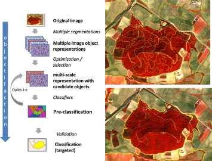
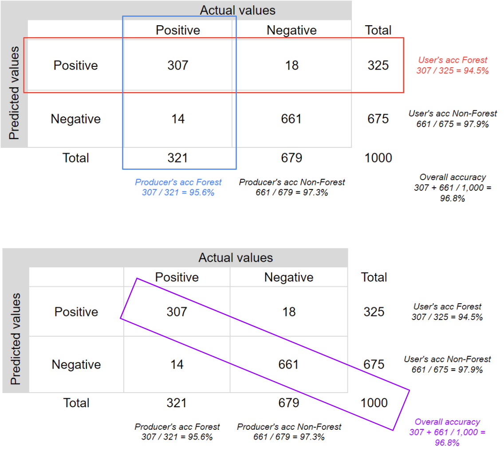
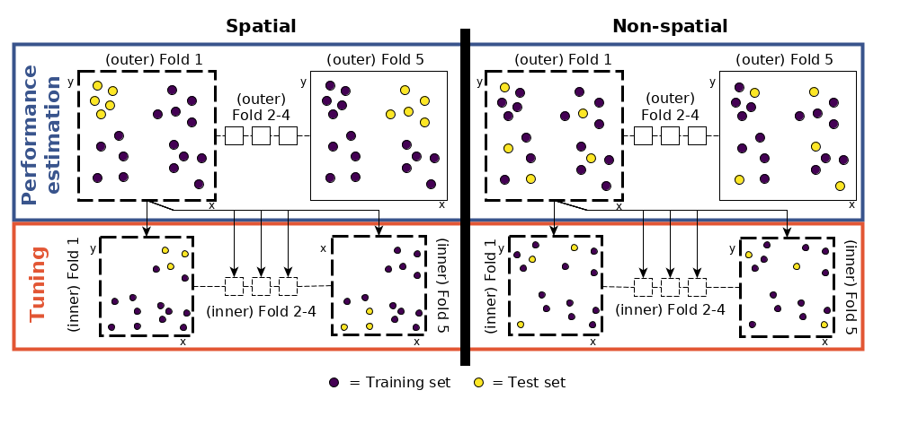
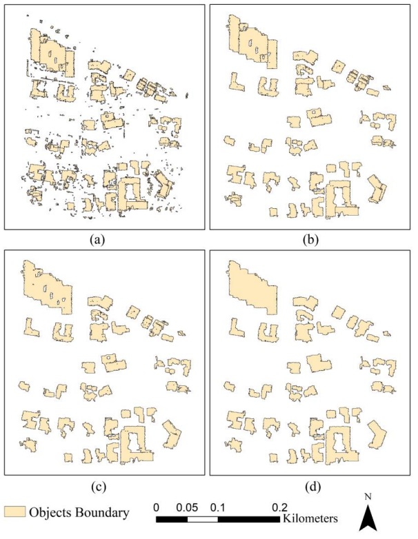

7 Classification II: Beyond the pixels and Accuracy
7.1 Summary
So far, we have examined various methods to classify pixels into different classes via supervised and unsupervised learning. However, for remote sensing data (or geospatial data in general), reality doesn’t stop at the single-pixel level. This week, we will examine two image classification methods before assessing the accuracy of a spatial classification model.
7.1.1 Advanced image classification methods
Object-Based Image Analysis (aka OBIA or Super-pixel Analysis): before being fed into a classification algorithm, pixels are first clustered into super-pixels. OBIA allows researchers to extract meaningful objects from imagery by leveraging spectral information (colour) and spatial context (how pixels are arranged). There are many clustering methods:
SLIC (Simple Linear Iterative Clustering) clusters pixels into superpixels based on the spatial distance among the pixels and colour difference.
Supercells clusters using any dissimilarity measure not just Euclidean distance and based on LAB colour space

- Sub-pixel Analysis: In similar veins but in the opposite direction, sometimes pixels contain more than one class (especially low-resolution data). Therefore, our analysis may benefit from assigning a pixel partial membership with a certain weight for each class. Sub-pixel analysis can be standardised to make the analysis in certain contexts more efficient and interpretable, such as leveraging the V-I-S model in urban areas (three end members). On the other hand, it can also be expanded in complexity in the form of Multiple Endmember Spectral Mixture Analysis (MESMA) in which many possible mixture models are examined to produce the best fit

7.1.2 Accuracy Assessment
There are many ways to measure the accuracy of an ML model. However, some of the most popular ones frequently employed in literature are user’s accuracy, producer’s accuracy, overall accuracy and F1 score

Producer’s accuracy (recall) is defined as the fraction of correctly classified pixels
TPcompared to ground truth dataTP+FN, loosely how many % of the actual values are correctly classified. Error of omission is the inverse of this.User’s accuracy (precision) is defined as the fraction of correctly classified pixels
TPrelative to all others classified as a particular land coverTP+FP, loosely how many % of the predicted values are correctly classified. Error of commission is the inverse of this.Overall accuracy that represents the combined fraction of correctly classified pixels
TP+TNacross all land cover typesTP+TN+FP+FNThe F1 score combines PA and UA into one measure:
TP / TP + 0.5*(FP+FN).it penalisesFPandFN, while overall accuracy also awardsTN.
However, optimising F1-score only may obscure TN, while optimising OA alone conflates TP and TN. In cases where TN is as important (e.g., when there are many classes of different distributions and correctly predicting negatives of each class is necessary), we could use Area under the Receiver Operating Characteristic Curve (AUROC), which essentially both maximises TP and minimises FP (thus increasing the TN rate). AUROC can be used to compare different models more effectively.

7.1.3 Spatial Autocorrelation in Machine Learning
One interesting detail from this topic is that machine learning on spatial systems has a distinct issue of spatial correlation that may not be present in other applications. One consequence of this is that the train/test split needs extra care in case the data in each are close to each other spatially, thus causing data leakage and affecting the accuracy assessment of the model (i.e., making it unfair)
One method is to perform ML using OBIA instead of pixels since the process of creating superpixels already reduces spatial correlation (pixels close to each other are already bundled into one bigger object different from the one adjacent to it)
Another method to apply is spatial cross-validation, where Train/Test splitting is done in a spatially-aware manner, establishing a required boundary between them to minimise the leakage mentioned above. This could also be done using k-means clustering or using SVM.

7.2 Application
Looking beyond the pixels enables many more additional applications than just LULC classification. If pixel-based classification can help detect urban vs rural land use, subpixel analysis and OBIA can map impervious surfaces (Shao et al. 2023), granular green spaces such as lawns (Zhou, Troy, and Grove 2008), and building footprint extraction and classification (Zhang, Han, and Bogus 2020), etc.
Let’s take a closer look at Zhang, Han, and Bogus (2020)’s methodology, as it shows many possibilities made available with OBIA to be fused with other techniques to extract beyond what can be seen, i.e., not just building footprint but also height:
- LiDAR was used to create two 3D models of the area: one representing the surface with everything on it (DSM) and another representing the bare ground (DTM). The ground model was then subtracted from the surface model to get a difference model (DHM) showing the object’s height above the ground.

- OBIA applied to first provide the raw set of footprints which went through a series of additional corrections. This was fused with the DHM to identify potential building footprints and heights. This is validated finally with ground-truth data.

Finally, on the topic of accuracy assessment, this paper terms PA as Completeness, UA as Correctness, and a modified F1-score as Quality–the denominator is TP+FN+FP instead of TP+0.5*(FN+FP). In addition, the similarity of building shapes extracted using OBIA was assessed using metrics like perimeter ratio r(P) and area ratio r(A), which tell us how closely the shapes of the detected buildings resemble the actual buildings on the ground. The closer these ratios are to 0, the more similar they are.
7.3 Reflection
This week’s investigation into advanced classification, including OBIA, has been eye-opening. It operates upon concepts that humans are most attuned to: We perceive ‘stuff’ as objects instead of a bunch of pixels, and computer vision can now replicate that sort of world perception. It amazes me somewhat how we could bridge the gap between pixel and object detection in remote sensing data using seemingly logical and simplistic assumptions such as colour consistency and continuity to great accuracy results.
Speaking of accuracy and many gaps present in machine learning on RS data, although it poses more questions than answers, I was intrigued by the level of critical subjective judgment required to be a successful geospatial analyst. For example, what accuracy metric to use for each application has differed much from one academic circle to another, and has no standardised approach. That said, it was reassuring to hear (from Andy’s_ that AUROC has been more widely supported to be an effective accuracy metric based. On a conceptual level, it rightly puts the focus on the users of the insights rather than the data scientists while avoiding a skewed assessment produced by the User’s accuracy metric, which is unreliable for high variances among classes (often the case for RS data). I am interested in finding out newer techniques developed to better perform object detection and overcome data quality or ground truth limitations (i.e., low resolution, unknown classes, etc.).